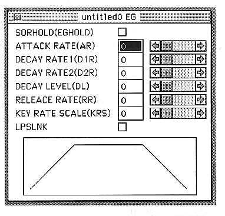

SORHOLD(EGHOLD)
・ON
The value in the attack holds “000”.
・OFF
The attack value changes according to AR.
ATTACK RATE(AR)
Sets the degree of change of the EG in the attack state.
You can set a value from 0 to 31.
DECAY RATE1(D1R)
Sets the degree of EG change in decay 1 state.
You can set a value from 0 to 31.
DECAY RATE2(D2R)
Sets the degree of EG change in decay 2 state.
You can set a value from 0 to 31.
DECAY LEVEL(DL)
Sets the attenuation level at which the EG transitions from decay 1 to decay 2.
You can set a value from 0 to 31.